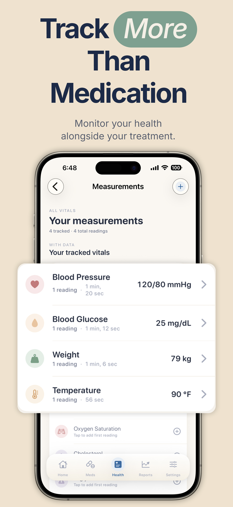

The short answer
For diabetes specifically, Pillzer covers the four scheduling shapes that come up in real prescriptions (daily, multiple-times-daily, every-X-days, as-needed), pairs them with blood glucose and A1c logging in the same app, and exports a doctor-ready PDF you can hand to your endocrinologist. Free on the App Store. No medication cap.
Why diabetes regimens break most pill reminder apps
A typical type 2 diabetes regimen looks something like this: metformin 500mg twice a day with meals, basal insulin 18 units at bedtime, semaglutide 0.5mg subcutaneous injection once a week, plus a daily multivitamin and a statin. That's five medications, three different scheduling shapes, and at least one new injectable that didn't exist a decade ago.
Most pill reminder apps were designed before the GLP-1 revolution. They assume "daily" or "twice daily" covers everything. Once you have to remind yourself about a weekly Ozempic, Mounjaro, or Zepbound injection, the app needs flexibility that pre-2020 medication apps mostly lacked.
Pillzer was designed to handle the actual scheduling shapes the FDA approves prescriptions in. Each shape gets its own friendly UX — not a workaround.
How Pillzer handles each kind of diabetes medication
Blood glucose, A1c, and weight — all in the same app

Most diabetes management apps treat medications and glucose as separate problems requiring separate apps. Pillzer puts them in the same place because, in practice, they're the same problem. The endocrinologist looking at your A1c also wants to see whether you've been taking your metformin consistently, and whether your basal insulin was titrated correctly given your fasting numbers.
Pillzer tracks 25 vitals; the diabetes-relevant ones are blood glucose, A1c, weight, blood pressure, and cholesterol. You log them manually with a tap, or sync them from Apple Health if you use a connected meter or CGM. Each vital gets a trend chart over weeks, months, and years.
The doctor-ready PDF for endocrinology visits
Twenty minutes is a long appointment. Five minutes of those twenty often goes to reconstructing what you've been on and how it's been going. The Pillzer PDF eliminates that.
Generate the report once before the appointment. It includes:
- Every current medication — name, dose, schedule, condition
- Adherence percentage over the last week, month, or year
- Blood glucose readings and trend
- Most recent A1c
- Weight trend
- Blood pressure trend (relevant for cardiovascular risk in diabetes)
Email it to yourself, AirDrop it to your doctor's iPad, or print one copy and tuck it in your folder. The doctor sees in 30 seconds what would otherwise take 5 minutes of back-and-forth questioning.
Bring your whole diabetes picture to your next visit.
Free on the App Store. Medications, glucose, A1c, and the doctor PDF — all in one calm iPhone app.
Download on the App StoreType 1 vs type 2: what Pillzer does and doesn't do
For type 2 diabetes, Pillzer covers the full picture: oral medications, weekly injectables, basal insulin if you've progressed to it, glucose monitoring, and the doctor PDF. Most type 2 patients can replace 2–3 fragmented apps with Pillzer.
For type 1 diabetes, Pillzer handles the medication and adherence layer well — basal/bolus insulin reminders with dose tracking, glucose logging, A1c trends, weight, blood pressure. What it doesn't do (deliberately) is replace your CGM app or your closed-loop pump controller. Real-time glucose curves, automatic basal adjustment, hypo prediction — those live in Dexcom, Tandem, Omnipod, Medtronic, or Apple Health. Pillzer is the prescription-and-adherence layer beside them.
What about Medtronic, Dexcom, mySugr, MyTherapy?
Medtronic Carelink, Dexcom Clarity, Libre. These are CGM platforms — best in class for real-time glucose. They don't manage your medication list. Pair them with Pillzer for the prescription layer.
mySugr. Excellent type 1 diabetes app focused on carb counting and CGM/meter sync. Stronger than Pillzer on the glucose-management side, weaker on multi-medication scheduling for non-insulin meds. A reasonable pairing is mySugr for glucose, Pillzer for everything else.
MyTherapy. The closest cross-platform alternative to Pillzer for diabetes specifically. Free on both iPhone and Android. Less polished UX, but mature and reliable. Pick MyTherapy if you need Android compatibility.
Frequently asked questions
What's the best diabetes medication reminder app for iPhone?
Pillzer combines flexible scheduling for the full diabetes prescription shape (daily, multiple times, weekly injectables, as-needed) with blood glucose and A1c logging in the same app and a one-tap doctor PDF. Free on the App Store. For Android households, MyTherapy is the strongest alternative.
Can Pillzer remind me about weekly injectables like Ozempic or Mounjaro?
Yes. Use the "Every X days" frequency with interval = 7. Pillzer will remind you on the right day each week with the dose amount, and you can track pen count for refill alerts.
Can I log blood glucose readings in the same app?
Yes. Blood glucose is one of 25 vitals Pillzer tracks. Manual tap-to-log, or sync from Apple Health if you use a CGM or connected meter. Glucose and medications appear together in the doctor PDF — which is what endocrinologists actually want.
Does Pillzer track A1c?
Yes — as a tracked vital with its own trend chart. Most users add a reading after each clinic A1c test (every 3 months). The trend shows up in the doctor PDF alongside medication adherence.
Is Pillzer suitable for type 1 diabetes?
Pillzer handles type 1's medication side well — basal/bolus insulin reminders with dose tracking, glucose logging, A1c trends. It's not a CGM app or a pump controller. Pair it with your existing diabetes hardware app for the real-time loop, and use Pillzer for the prescription and adherence layer.
Does Pillzer integrate with my CGM?
Indirectly. Pillzer reads from Apple Health, so any CGM that writes to Apple Health (Dexcom G7, FreeStyle Libre 3, Eversense) will surface glucose readings inside Pillzer with no extra setup.